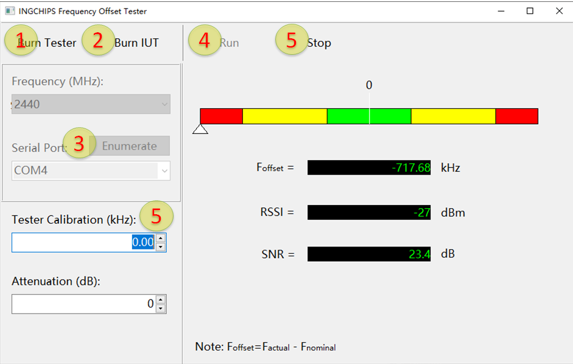
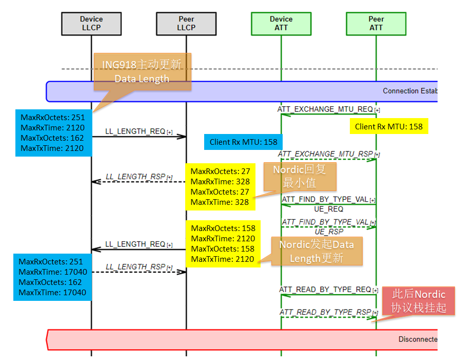
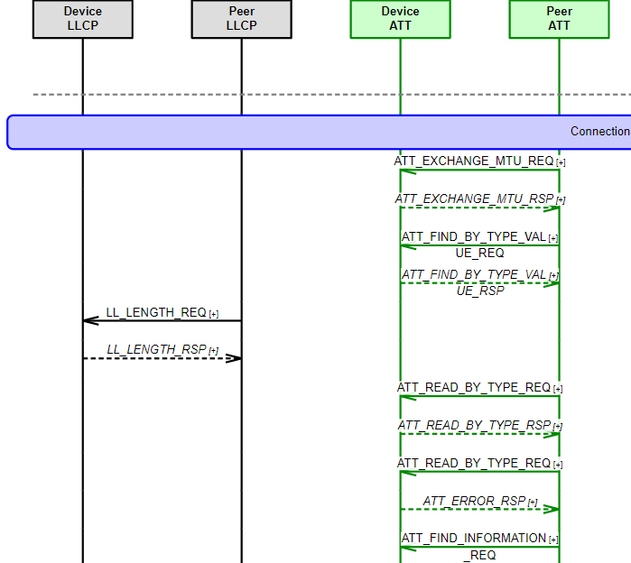

针对客户需求，SDK 6.0 增加了平台补丁、简易偏频测量等新功能。协议栈陆续增加了几个配置项，可以提升 ING918xx 蓝牙协议栈的兼容性，
平台补丁
SDK 提供的 platform.bin 功能固定、不可更改，某些特殊需求——比如在系统复位之后尽快配置看门狗——无法实现。对此，我们开发了平台补丁工具，
可以将开发者编写的一段程序作为补丁插入到 platform 已有的中断服务程序之前。
对补丁程序存有以下限制和注意事项：
-
进入补丁程序时，未配置栈空间。因此需要保证 1) 程序中不存在压、弹栈操作，或者 2) 程序自行配置栈空间；
-
工具会将补丁程序附加到
platform.bin最后一页 eFlash 存储空间的空白处，所以其大小受限； -
补丁程序的加载位置不固定。
Reset Handler 示例在系统复位之后立即配置看门狗。这个示例使用汇编开发，未使用栈空间，体积也很小。补丁工具会识别
Reset_Handler 函数的最后两行代码，自动调整。
Reset_Handler PROC
EXPORT Reset_Handler
; ...
LDR R0, =0xFEED4000 ; will be modified by tool
BX R0
ENDP
补丁程序准备好之后，在 Wizard 里选择菜单 Tools → More → Patching Platform 打开补丁工具。选择
platform.bin、补丁程序，然后点击 “Make Patch” 生成带有补丁程序的新的 platform.bin，烧录时使用
用这个文件替换掉原有的 platform.bin 即可。
简易频偏测量
支持蓝牙频段的频谱仪普遍价格较高，移动性差。现在只需要使用一块 ING9188xx 开发板就可以测量频偏。
在 Wizard 里选择菜单 Tools → More → Frequency Offset Tester 打开频偏测量工具：

使用步骤：
-
点击 “Burn Tester” 把测试用固件烧入 ING9188xx 开发板（此步骤只需要执行一次）；
-
点击 “Burn IUT” 把测试程序写入待测设备；
-
填写 ING9188xx 开发板的串口号；
-
点击 “Run” 开始测试；
-
点击 “Stop” 完成测试。
ING9188xx 开发板本身的频偏可以填到 (5) Tester Calibaration (kHz)，ING9188xx 开发板与 IUT 之间的链路衰减可以填到 Attenuation (dB)。
注意事项：
-
建议通过空口测试；如果使用电缆连接，务必加入适当的衰减，以防输入信号过大，ING9188xx 芯片过载；
-
“Burn IUT” 会将测试程序写入待测设备的 RAM 中，待测设备掉电或者复位后测试程序自动消失、失效；
-
待测信道会随测试程序写入待测设备，不可中途切换，而 ING9188xx 开发板上烧录的测试用固件支持信道切换。
发射功率校准
新版的 BQB RF 测试工具在进行连续波发射测试时，可以设置发射功率等级。连接频谱仪校准与功率等级对应的实际功率值，然后
用 API platform_set_rf_power_mapping 将校准过的功率对应表传入 platform，校准完成。
兼容性
低功耗蓝牙进入连接模式后，各层分别协商通信中数据包的大小，对于 ATT 层，由 MTU EXCHANGE 流程实现；对于链路层，由 DATA LENGTH 更新流程实现。
按照规范，进入连接模式后，DATA LENGTH 更新流程可以由主或从设备在任何时刻发起。这导致了一个问题：某些芯片无法处理对方设备“随时”发起的 DATA LENGTH 更新流程。比如当旧版本（< 5.7.0）的平台软件被 Nordic 芯片以主角色连接后，Nordic 芯片出现协议栈挂起的情况，消息序列图如下。

为了更新地兼容不同的芯片，v5.7.0 定义了两个配置项：
enum btstack_config_item {
STACK_ATT_SERVER_ENABLE_AUTO_DATA_LEN_REQ = 1,
STACK_GATT_CLIENT_DISABLE_AUTO_DATA_LEN_REQ = 2,
...
};
这两个配置分别控制 GATT Server、Client 在 MTU EXCHANGE 时是否自动发起 DATA LENGTH 更新流程。默认情况下，Servier 不会自动发起更新流程， 而 Client 会自动发起。旧版本（< 5.7.0）下里两者都会自动发起更新流程。
新版本默认情况下，可以被 Nordic 芯片以主角色正常连接：

PS: 虽然 MTU 的大小与 Data Length 两参数没有联系、相互独立，但是图中 Nordic 芯片把两者定义为同一个值，说明开发者在配置
sdk_config 时很可能犯了一个错误。